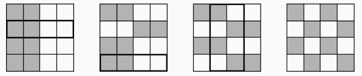

In the $4 \times 4$ square, the cells in the left half are painted black, and the rest - in white. In one go, it is allowed to repaint all cells inside any rectangle in the opposite colour. How, in three goes, can one repaint the cells to get the board to look like a chessboard?
One solution is given below.
